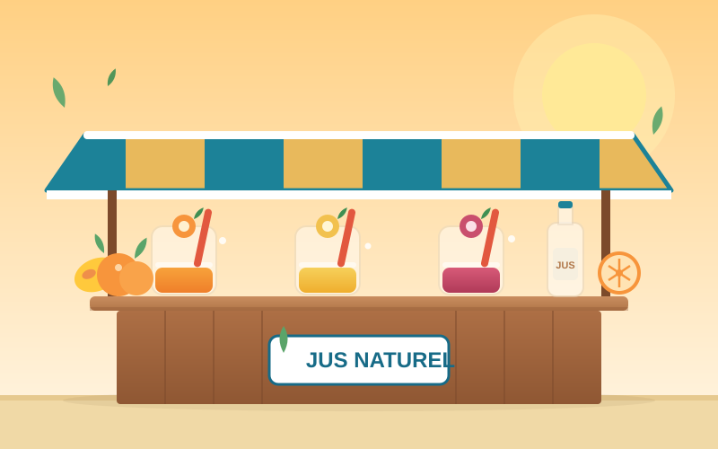
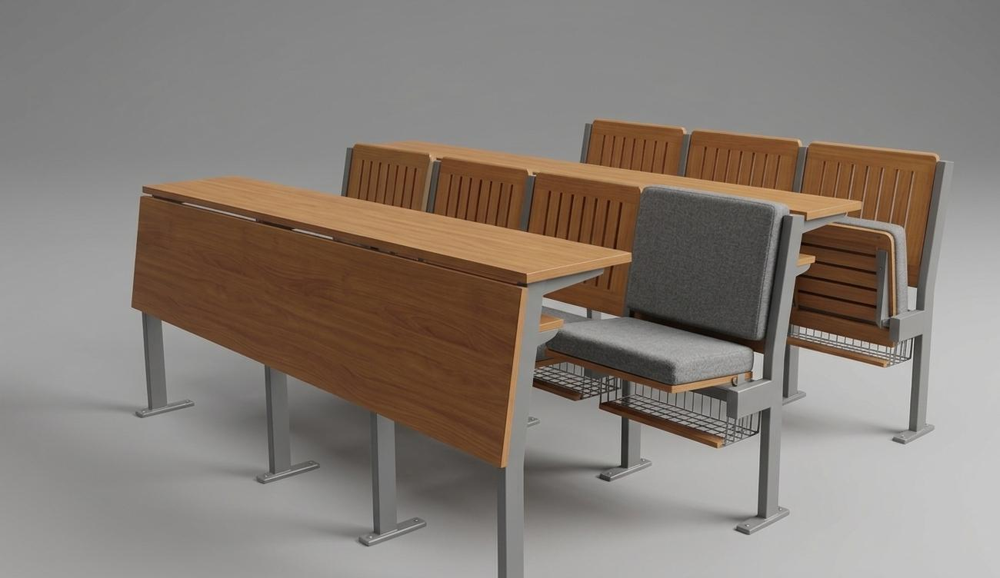
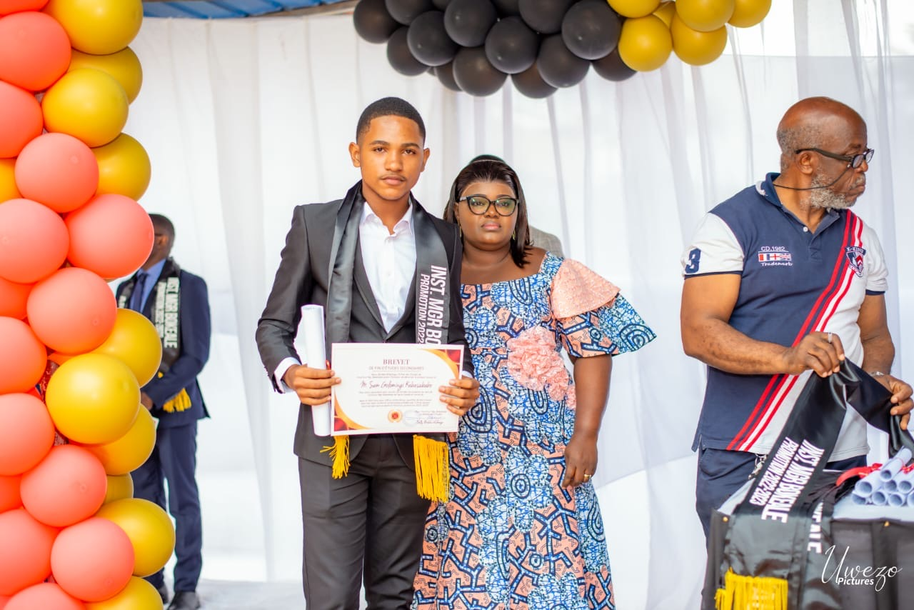
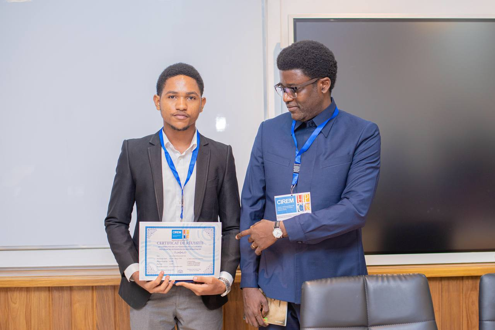
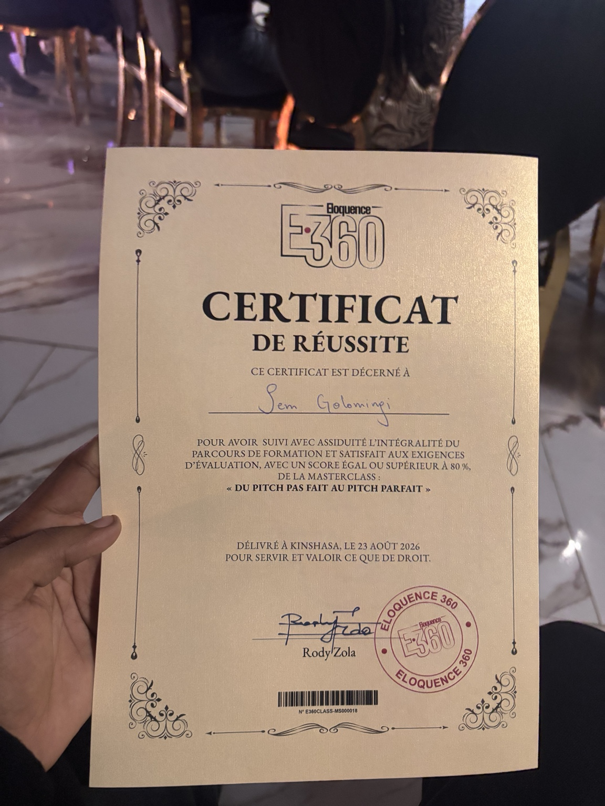

Économie
Microéconomie, macroéconomie, économie publique, internationale et du développement.
ÉCONOMIE · PROJETS
Je suis Sem Golomingi, Licencié en sciences économiques, passionné par l'économie ,la finance, l'analyse de données, la technologie et l'entrepreneuriat.
01 — À PROPOS
Mon parcours repose sur une idée simple : comprendre les problèmes économiques ne suffit pas. Il faut aussi savoir les mesurer, les expliquer et surtout chercher des solutions concrètes.
À l’aise avec les chiffres et curieux de nature, j’aime apprendre, analyser et transformer mes connaissances en projets utiles. J’avance avec une volonté constante de progresser, de créer et de grandir, aussi bien sur le plan professionnel que personnel.
02 — COMPÉTENCES
Microéconomie, macroéconomie, économie publique, internationale et du développement.
Statistique, économétrie, analyse et interprétation de données économiques.
Python, R, Excel, LaTeX, Word et PowerPoint.
Leadership, communication, adaptation rapide
03 — PROJETS

ENTREPRENEURIAT
Commercialisation de jus de fruits naturels, du sourcing des fruits locaux à la vente, dans un contexte entrepreneurial à Kinshasa.
En savoir plus →
ENTREPRENEURIAT
Conception et commercialisation de bancs destinés aux universités.
En savoir plus →04 — FORMATION & CERTIFICATIONS

FORMATION
Une première étape qui a posé les bases de la suite de mon parcours.

Formation en mathématiques
Formation renforcée en mathématiques appliquées à l'économie.

DIPLÔME UNIVERSITAIRE
Formation universitaire en sciences économiques.

COMMUNICATION
Formation en prise de parole et Pitch.
05 — PARCOURS
Formation en économie.
Découverte pratique du fonctionnement financier d'une administration économique et fiscale.
JLauréat du Prix CREC (Concours de la Relève pour l’Excellence et la Créativité), avec une moyenne finale de 86 %, après cinq jours d’épreuves en mathématiques appliquées à l’économie, incluant notamment des régressions, l’analyse d’articles en anglais et des exercices de créativité.
06 — DISTINCTIONS
Lauréat du Prix CREC · Team Genius · Projets entrepreneuriaux
07 — CONTACT
Retrouve-moi sur mes plateformes professionnelles ou écris-moi directement.